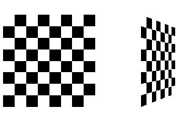

| Syllabus | Blank | Homework | Quizzes | |
| Notes | Labs | Scores | Blank |
Apply discrete data for surface rendering
Three major techniques:
|
Sphere without bump mapping. |
Bump map |
Sphere with bump map resembling an orange |
0 ≤ u ≤ 1 and 0 ≤ v ≤ 2π , then
s = u, and t = v / 2π
To apply texture maps to an arbitrary surface, it is convenient to define the surface parametrically by a function p(u, v).
Example: Map a texture onto the side of a cylinder ( excluding the top and bottom sides ) :
Here (u, v) = (θ, y)
Example:Map texture to sphere
#define PI 3.141592654
#define TWOPI 6.283185308
void SphereMap( double x, double y, double z, double radius, double *s, double *t)
{
*t = acos(z/radius) / PI;
if (y >= 0)
*s = acos(x/(radius * sin(PI*(*t)))) / TWOPI;
else
*s = (PI + acos(x/(radius * sin(PI*(*t))))) / TWOPI;
}
|
|
Mapping texels to pixels. (a)Magnification. (b) Minification. In both cases, the fastest strategy is to use the value of the nearest point sampling. |
e.g. glTexParameteri(GL_TEXTURE_2D, GL_TEXTURE_MAG_FILTER, GL_NEAREST);
glTexParameteri(GL_TEXTURE_2D, GL_TEXTURE_MIN_FILTER, GL_NEAREST);
Texture mapping -- applying a graphics image, a picutre, or a pattern to a surface.
Properties of texture maps:
|  | |
Steps in Texture Mapping:
e.g.
GLuint handles[2];
glGenTextures(2, handles);
glBindTexture(GL_TEXTURE_2D, handles[0]);
// Initialize texture parameters and load a texture with glTexImage2D
glBindTexture(GL_TEXTURE_2D, handles[1]);
// Initialize texture parameters and load another texture
e.g. glTexEnvi(GL_TEXTURE_ENV, GL_TEXTURE_ENV_MODE, GL_MODULATE);
Texture Names:
To start things off, we first need a texture name. This is essentially a number that OpenGL uses to index all the different textures.
GLuint texture; // allocate a texture name glGenTextures( 1, &texture );
Now that we have our texture name, we can switch between different textures we want using the function glBindTxeture. This essentially chooses what texture we are working with.
// select our current texture glBindTexture( GL_TEXTURE_2D, texture );
Texture Parameters:
Now we can begin to work on our current texture. Before we start, we should set one little texture environment state which tells OpenGL how the texture will act when it is rendered into a scene.
// select modulate to mix texture with color for shading glTexEnvf( GL_TEXTURE_ENV, GL_TEXTURE_ENV_MODE, GL_MODULATE );
Next, we have four texture parameters we need to setup. Here is where we can setup such wonderful effects like bilinear and trilinear texture filtering, and mipmapping. We also can setup whether the texture wraps over at the edges or is clamped at the ends. The most common feature used is 'repeating'.
// when texture area is small, bilinear filter the closest mipmap
glTexParameteri( GL_TEXTURE_2D, GL_TEXTURE_MIN_FILTER,
GL_LINEAR_MIPMAP_NEAREST );
// when texture area is large, bilinear filter the original
glTexParameteri( GL_TEXTURE_2D, GL_TEXTURE_MAG_FILTER, GL_LINEAR );
// the texture wraps over at the edges (repeat)
glTexParameteri( GL_TEXTURE_2D, GL_TEXTURE_WRAP_S, GL_REPEAT );
glTexParameteri( GL_TEXTURE_2D, GL_TEXTURE_WRAP_T, GL_REPEAT );
A Checker board
|
|
Cube with texture images
|
|
| void glTexImage2D(GLenum target, GLint level, GLint internalFormat, GLsizei width, GLsizei height, GLint border, GLenum format, GLenum type, const GLvoid *pixels); |
| Defines a two-dimensional texture. The target parameter is set to either the constant GL_TEXTURE_2D or GL_PROXY_TEXTURE_2D. You use the level parameter if you're supplying multiple resolutions of the texture map; with only one resolution, level should be 0. |
| void glCopyTexImage2D(GLenum target, GLint level, GLint internalFormat, GLint x, GLint y, GLsizei width, GLsizei height, GLint border); |
|
Creates a two-dimensional texture, using framebuffer data to define the texels.
The pixels are read from the current GL_READ_BUFFER and are processed exactly
as if glCopyPixels() had been called but stopped before final conversion.
The settings of glPixelTransfer*() are applied.
The target parameter must be set to the constant GL_TEXTURE_2D. The level, internalFormat, and border parameters have the same effects that they have for glTexImage2D(). The texture array is taken from a screen-aligned pixel rectangle with the lower-left corner at coordinates specified by the (x, y) parameters. The width and height parameters specify the size of this pixel rectangle. Both width and height must have the form 2m+2b, where m is a nonnegative integer (which can have a different value for width than for height) and b is the value of border. |
Sphere with texture images
Adopted from http://local.wasp.uwa.edu.au/~pbourke/texture_colour/texturemap/
/*
Create a sphere centered at c, with radius r,
and precision n.
Draw a point for zero radius spheres
*/
typedef struct {
double x;
double y;
double z;
} XYZ;
void CreateSphere(XYZ c,double r,int n)
{
int i,j;
double phi1,phi2,theta, s, t;
XYZ e,p;
if (r < 0)
r = -r;
if (n < 0)
n = -n;
if (n < 4 || r <= 0) {
glBegin(GL_POINTS);
glVertex3f(c.x,c.y,c.z);
glEnd();
return;
}
for (j=0;j < n; j++) {
phi1 = j * TWOPI / n;
phi2 = (j + 1) * TWOPI / n; //next phi
glBegin(GL_QUAD_STRIP);
for (i=0;i < = n;i++) {
theta = i * PI / n;
e.x = sin ( theta ) * cos ( phi2 );
e.y = sin ( theta ) * sin ( phi2 );
e.z = cos ( theta );
p.x = c.x + r * e.x;
p.y = c.y + r * e.y;
p.z = c.z + r * e.z;
glNormal3f(e.x,e.y,e.z);
s = phi2 / TWOPI; // column
t = 1 - theta/PI; // row
glTexCoord2f(s, t);
glVertex3f(p.x,p.y,p.z);
e.x = sin ( theta ) * cos ( phi1 );
e.y = sin ( theta ) * sin ( phi1 );
e.z = cos ( theta );
p.x = c.x + r * e.x;
p.y = c.y + r * e.y;
p.z = c.z + r * e.z;
glNormal3f(e.x,e.y,e.z);
s = phi1/TWOPI; // column
t = 1 - theta/PI; // row
glTexCoord2f(s, t);
glVertex3f(p.x,p.y,p.z);
}
glEnd();
}
}
|
|
From (2c), we have
Substituting (2d) into (2a) and (2b), we obtain,
Note that
| glTexGen(GL_S, GL_TEXTURE_GEN_MODE, GL_SPHERE_MAP); |
| glTexGen(GL_T, GL_TEXTURE_GEN_MODE, GL_SPHERE_MAP); |
| glEnable(GL_TEXTURE_GEN_S); |
| glEnable(GL_TEXTURE_GEN_T); |
Example
/*
* CS 520: environment-map.cpp
* Demonstrates the creation of environment map using the command
* glCopyTexImage2D(GL_TEXTURE_2D, 0, GL_RGB, 0, 0, 500, 500, 0);
* The scene can be rotated by pressing keys 'x', 'X', 'y', 'Y', 'z', 'Z'.
* @Author: T.L. Yu, 2008F
*
*/
#include <GL/gl.h>
#include <GL/glu.h>
#include <GL/glut.h>
#include <stdlib.h>
#include <stdio.h>
int window;
int anglex= 0, angley = 0, anglez = 0; //rotation angles
void init(void)
{
glClearColor (0.9, 0.9, 0.8, 0.0);
glShadeModel(GL_FLAT);
glEnable(GL_DEPTH_TEST);
float light_ambient[4] = { 0.1, 0.1, 0.1, 1.0 }; // r, g, b, a
float light_diffuse[4] = { 0.9, 0.8, 0.9, 1.0 }; // r, g, b, a
float light_position[4] = { 1.0, 1.0, 1.0 , 0.0 }; // x, y, z, w
glEnable(GL_LIGHTING);
glLightfv(GL_LIGHT0, GL_AMBIENT, light_ambient);
glLightfv(GL_LIGHT0, GL_DIFFUSE, light_diffuse);
glLightfv(GL_LIGHT0, GL_POSITION, light_position);
glEnable(GL_LIGHT0);
// enable automatic texture coordinate generation
glTexGeni(GL_S, GL_TEXTURE_GEN_MODE, GL_SPHERE_MAP);
glTexGeni(GL_T, GL_TEXTURE_GEN_MODE, GL_SPHERE_MAP);
glEnable(GL_TEXTURE_GEN_S);
glEnable(GL_TEXTURE_GEN_T);
glTexParameteri(GL_TEXTURE_2D, GL_TEXTURE_WRAP_S, GL_REPEAT);
glTexParameteri(GL_TEXTURE_2D, GL_TEXTURE_WRAP_T, GL_REPEAT);
glTexParameteri(GL_TEXTURE_2D, GL_TEXTURE_MAG_FILTER, GL_NEAREST);
glTexParameteri(GL_TEXTURE_2D, GL_TEXTURE_MIN_FILTER, GL_NEAREST);
glEnable(GL_TEXTURE_2D);
}
//rotate the objects
void rotate()
{
glRotatef( anglex, 1.0, 0.0, 0.0); //rotate along x-axis
glRotatef( angley, 0.0, 1.0, 0.0); //rotate along y-axis
glRotatef( anglez, 0.0, 0.0, 1.0); //rotate along z-axis
}
//arbitrarily draw something
void drawScene()
{
glDisable(GL_LIGHTING);
glDisable(GL_TEXTURE_2D);
glColor3f ( 1, 0, 0 );
glPointSize ( 8 );
//draw a red point
glBegin ( GL_POINT );
glVertex3f ( 1, 2, 2 );
glEnd();
glColor3f ( 0, 1, 0 );
//draw a green triangle
glBegin ( GL_TRIANGLES);
glVertex3f ( 2, 2, -2 );
glVertex3f ( 2, 3, -3 );
glVertex3f ( 2, 2, -3 );
glEnd();
glColor3f ( 0.1, 0.1, 0.8 );
//draw a blue teapot at left side
glPushMatrix();
glTranslatef( -1.0, -1.0, 2.5 );
glRotatef( 45, 1, 1, 1 );
glutSolidTeapot( 1 );
glPopMatrix();
glEnable(GL_TEXTURE_2D);
glEnable(GL_LIGHTING);
}
void display(void)
{
glClear(GL_COLOR_BUFFER_BIT | GL_DEPTH_BUFFER_BIT);
//blend texture with lighting
glTexEnvf(GL_TEXTURE_ENV, GL_TEXTURE_ENV_MODE, GL_MODULATE);
glLoadIdentity();
gluLookAt ( 0, 0, 0, 5, 0, 0, 0, 0, 1 ); //put camera at center of origin
glScalef ( 1, -1, 1 ); //flip left-right
rotate();
drawScene();
//Use current framebuffer image as texture
glCopyTexImage2D(GL_TEXTURE_2D, 0, GL_RGB, 0, 0, 500, 500, 0);
//clear frame buffer to draw sphere with scene
glClear(GL_COLOR_BUFFER_BIT | GL_DEPTH_BUFFER_BIT);
glLoadIdentity();
//put camera back at the observational point
gluLookAt ( 5, 0, 0, 0, 0, 0, 0, 0, 1 );
rotate();
drawScene();
glutSolidSphere( 1.0, 20, 20 ); // draw a sphere with this sphere map
glFlush();
}
void keyboard(unsigned char key, int x, int y)
{
switch(key) {
case 'x':
anglex = ( anglex + 3 ) % 360;
break;
case 'X':
anglex = ( anglex - 3 ) % 360;
break;
case 'y':
angley = ( angley + 3 ) % 360;
break;
case 'Y':
angley = ( angley - 3 ) % 360;
break;
case 'z':
anglez = ( anglez + 3 ) % 360;
break;
case 'Z':
anglez = ( anglez - 3 ) % 360;
break;
case 'r':
anglex = angley = anglez = 0;
break;
case 27: /* escape */
glutDestroyWindow(window);
exit(0);
}
glutPostRedisplay();
}
void reshape(int w, int h)
{
glViewport(0, 0, (GLsizei) w, (GLsizei) h);
glMatrixMode(GL_PROJECTION);
glLoadIdentity();
glOrtho(-4.0, 4.0, -4.0 * (GLfloat) h / (GLfloat) w,
4.0 * (GLfloat) h / (GLfloat) w, -10.0, 10.0);
glMatrixMode(GL_MODELVIEW);
glLoadIdentity();
gluLookAt ( 5, 0, 0, 0, 0, 0, 0, 0, 1 );
}
int main(int argc, char** argv)
{
glutInit(&argc, argv);
glutInitDisplayMode(GLUT_SINGLE | GLUT_RGB | GLUT_DEPTH);
glutInitWindowSize(500, 500);
glutInitWindowPosition(100, 100);
window = glutCreateWindow(argv[0]);
init();
glutDisplayFunc(display);
glutReshapeFunc(reshape);
glutKeyboardFunc(keyboard);
glutMainLoop();
return 0;
}
|
If |d(u,v)| << 1, we can drop the last terms in the equations and we have (note that n x n = 0):
Spherical Map:
// enable automatic texture coordinate generation glTexGeni(GL_S, GL_TEXTURE_GEN_MODE, GL_SPHERE_MAP); glTexGeni(GL_T, GL_TEXTURE_GEN_MODE, GL_SPHERE_MAP); glEnable(GL_TEXTURE_GEN_S); glEnable(GL_TEXTURE_GEN_T); // suppose that the texture has been loaded to texImage glBindTexture(GL_TEXTURE_2D, texImage); glPushMatrix(); glutSolidTeapot(1); // draw a teapot with this sphere map glBindTexture(GL_TEXTURE_2D, texImage); glTranslatef(1.5,1.5,0.0); glutSolidSphere(1.0,20,20); // draw a sphere with this sphere map glPopMatrix(); glDisable(GL_TEXTURE_GEN_S); glDisable(GL_TEXTURE_GEN_T); |
Cube Maps:
Automatic Texture Coordinates Generation:
/*
* env-torus.cpp ( Demo for CS 520 ): Draw a torus with texture images using
* automatic texture coordinates generation. Modulate mode is used so that
* texture color is combined with lighting effects.
* The torus can be rotated by pressing keys 'x', 'X', 'y', 'Y', 'z', 'Z'.
* Texture image is downloaded from Internet.
* @Author: T.L. Yu, 2008F
*
*/
#include <GL/gl.h>
#include <GL/glu.h>
#include <GL/glut.h>
#include <stdlib.h>
#include <stdio.h>
#include <string.h>
#include <math.h>
#include "imageio.h"
int texImageWidth;
int texImageHeight;
int window;
static GLuint texName; //texture name
int anglex= 0, angley = 0, anglez = 0; //rotation angles
char maps[] = {"glass.png"}; //texture file
//load texture image
GLubyte *makeTexImage( char *loadfile )
{
int i, j, c, width, height;
GLubyte *texImage;
/*
Only works for .png or .tif images. NULL is returned if errors occurred.
loadImageRGA() is from imageio library downloaded from Internet.
*/
texImage = loadImageRGBA( (char *) loadfile, &width, &height);
texImageWidth = width;
texImageHeight = height;
return texImage;
}
void init(void)
{
float light_ambient[4] = { 0.1, 0.1, 0.1, 1.0 }; // r, g, b, a
float light_diffuse[4] = { 1.0, 1.0, 0.9, 1.0 }; // r, g, b, a
//directional used
float light_position[4] = { 1.0, 1.0, 1.0 , 0.0 }; // x, y, z, w
glClearColor (0, 0, 0, 0.0); //black
glShadeModel(GL_FLAT);
glEnable(GL_DEPTH_TEST);
glEnable(GL_LIGHTING);
glLightfv(GL_LIGHT0, GL_AMBIENT, light_ambient);
glLightfv(GL_LIGHT0, GL_DIFFUSE, light_diffuse);
glLightfv(GL_LIGHT0, GL_POSITION, light_position);
glEnable(GL_LIGHT0);
glPixelStorei(GL_UNPACK_ALIGNMENT, 1);
//texName is global
glGenTextures(1, &texName);
// enable automatic texture coordinate generation
GLubyte *texImage = makeTexImage( maps );
if ( !texImage ) {
printf("\nError reading %s \n", maps );
return;
}
glBindTexture(GL_TEXTURE_2D, texName); //now we work on texName
glTexEnvi(GL_TEXTURE_ENV, GL_TEXTURE_ENV_MODE, GL_MODULATE); //mix with light
glTexParameteri(GL_TEXTURE_2D, GL_TEXTURE_WRAP_S, GL_REPEAT);
glTexParameteri(GL_TEXTURE_2D, GL_TEXTURE_WRAP_T, GL_REPEAT);
glTexParameteri(GL_TEXTURE_2D, GL_TEXTURE_MAG_FILTER, GL_NEAREST);
glTexParameteri(GL_TEXTURE_2D, GL_TEXTURE_MIN_FILTER, GL_NEAREST);
glTexImage2D(GL_TEXTURE_2D, 0, GL_RGBA, texImageWidth,
texImageHeight, 0, GL_RGBA, GL_UNSIGNED_BYTE, texImage);
delete texImage; //free memory holding texture image
//automatic texture coordinates generation
glTexGeni(GL_S, GL_TEXTURE_GEN_MODE, GL_OBJECT_LINEAR);
glTexGeni(GL_T, GL_TEXTURE_GEN_MODE, GL_OBJECT_LINEAR);
glEnable(GL_TEXTURE_GEN_S);
glEnable(GL_TEXTURE_GEN_T);
glEnable(GL_TEXTURE_2D);
}
void display(void)
{
glClear(GL_COLOR_BUFFER_BIT | GL_DEPTH_BUFFER_BIT);
glPushMatrix();
glRotatef( anglex, 1.0, 0.0, 0.0); //rotate along x-axis
glRotatef( angley, 0.0, 1.0, 0.0); //rotate along y-axis
glRotatef( anglez, 0.0, 0.0, 1.0); //rotate along z-axis
glutSolidTorus(1.0, 2, 30,30);
glPopMatrix();
glFlush();
}
void keyboard(unsigned char key, int x, int y)
{
switch(key) {
case 'x':
anglex = ( anglex + 3 ) % 360;
break;
case 'X':
anglex = ( anglex - 3 ) % 360;
break;
case 'y':
angley = ( angley + 3 ) % 360;
break;
case 'Y':
angley = ( angley - 3 ) % 360;
break;
case 'z':
anglez = ( anglez + 3 ) % 360;
break;
case 'Z':
anglez = ( anglez - 3 ) % 360;
break;
case 'r':
anglex = angley = anglez = 0;
break;
case 27: /* escape */
glutDestroyWindow(window);
exit(0);
}
glutPostRedisplay();
}
void reshape(int w, int h)
{
glViewport(0, 0, (GLsizei) w, (GLsizei) h);
glMatrixMode(GL_PROJECTION);
glLoadIdentity();
glOrtho(-4.0, 4.0, -4.0 * (GLfloat) h / (GLfloat) w,
4.0 * (GLfloat) h / (GLfloat) w, -10.0, 10.0);
glMatrixMode(GL_MODELVIEW);
glLoadIdentity();
gluLookAt ( 5, 0, 0, 0, 0, 0, 0, 0, 1 );
}
int main(int argc, char** argv)
{
glutInit(&argc, argv);
glutInitDisplayMode(GLUT_SINGLE | GLUT_RGB | GLUT_DEPTH);
glutInitWindowSize(500, 500);
glutInitWindowPosition(100, 100);
window = glutCreateWindow(argv[0]);
init();
glutDisplayFunc(display);
glutReshapeFunc(reshape);
glutKeyboardFunc(keyboard);
glutMainLoop();
return 0;
}
|
|